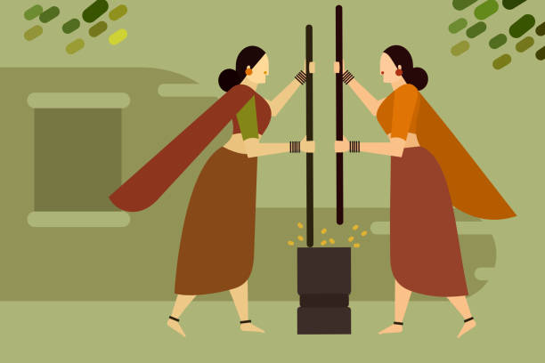

About

Why Pragati?
While there are several means and opportunities for the urban women to earn, the rural kind is often left to struggle. Pragati is a one-of-a-kind platform to enable women to apply their self-learnt skills to use and become the backbone of the family. We empower rural women by creating earning opportunities which contribute to economic growth. Additionally, we aim to help in bringing back India’s deteriorating traditional artifact culture. Women will be able to independently build their business without the need of family support or investment, thus paving the path for a confident and respectable future ahead.
What does Pragati do?
Pragati enables rural housewives to make money by selling their own authentic self-made products from home and providing reliable services on the go. The process being completely virtual can help women can gain recognition and become self-sufficient from the comfort of their home without sacrificing responsibilities towards their children and family. “Ask Desk” section encourages women to ask and solve their genuine queries, connect to experts in the field of their interest and get advice on worldly matters hence helping them be future-ready.